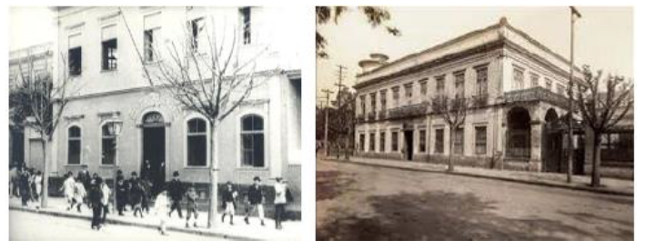
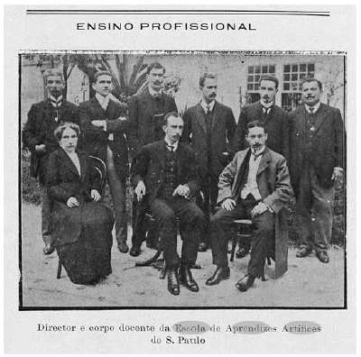
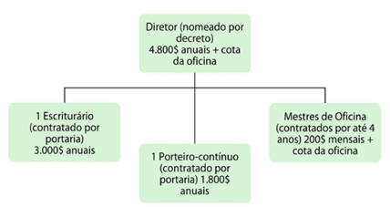
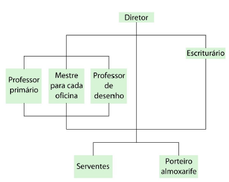
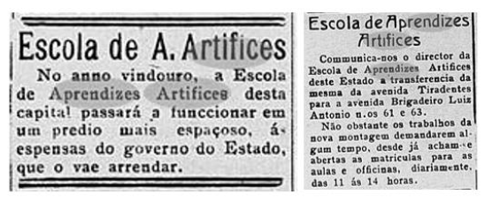
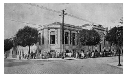
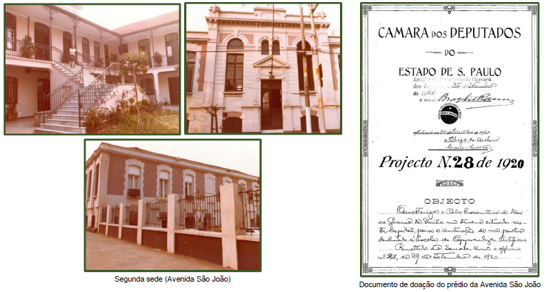
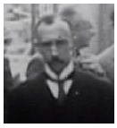

Como funcionou.
As Escolas de Aprendizes Artífices foram criadas pelo presidente Nilo Peçanha, por meio do Decreto 7.566 de 1909. Já nas considerações iniciais, o Decreto aponta que a criação dessas escolas primeiramente visava facilitar “às classes proletárias vencer as dificuldades sempre crescentes da luta pela existência”, como também “(...) não só habilitar os filhos dos desfavorecidos da fortuna com o indispensavel preparo technico e intellectual, como fazel-os adquirir habitos de trabalho proficuo, que os afastará da ociosidade ignorante, escola do vicio e do crime.”
Tais escolas tinham público definido, sendo passíveis de matrícula indivíduos de dez a treze anos, “desfavorecidos da fortuna”, “sem moléstia infecto-contagiosa, nem (...) defeitos que o impossibilitem para o aprendizado de oficio”.
O Brasil, à época, era um país recém saído da escravidão, mas já possuía 636 fábricas instaladas, 14 milhões de habitantes e aproximadamente 54 mil trabalhadores. A gênese do Ensino Profissional no país foi elitista e discriminatória, uma vez que visava profissionalizar crianças novas, oriundas das classes trabalhadoras, tornando-as mão de obra barata para a produção agropecuária e fabril.
As Escolas de Aprendizes Artífices se organizavam em oficinas, coordenadas por um mestre, nas quais acontecia a produção de artigos manufaturados que – durante um período - eram vendidos e transformados em renda para a escola e comissão para o diretor, o mestre e os alunos, que recebiam uma pequena parte. Seu funcionamento se dava das 10h00 às 16h00, prevendo ainda dois cursos noturnos: o curso primário, para os alunos que ainda não soubessem ler, uma vez que o ensino primário não era obrigatório, e o curso de desenho, para aqueles que ainda não tivessem esse conhecimento, para a prática nas oficinas.
O país – ainda pouco industrializado – importava praticamente todos os produtos de países estrangeiros. Com o advento da Primeira Guerra Mundial, a partir de 1914, e a dificuldade que o Brasil passou a ter de importar tais produtos, fez-se necessária a abertura de inúmeras indústrias que passaram a produzir os artigos de primeira necessidade, principalmente entre Rio de Janeiro e São Paulo.


Em 19 de fevereiro de 1910, a Escola foi instalada provisoriamente no Bairro da Luz, em prédio da Avenida Tiradentes.
Regime: Externato Público-Alvo: menores de famílias de baixa renda, a partir de
12 anos de idade.
A Escola de Aprendizes Artífices de São Paulo é inaugurada no dia 24 de junho de 1910. Em sua inauguração, previa-se a abertura dos cursos de Tornearia, Mecânica, Eletricidade, Carpintaria e Artes Decorativas. A primeira edificação que ocupou ficava na Avenida Tiradentes, n° 15 ou 15-B, onde posteriormente funcionou o Hospital da Cruz Azul, em uma região que sofreu alterações significativas em seu traçado.

Em São Paulo a escola chegou a oferecer cursos de Mecânica, Tornearia, Eletricidade, Marcenaria, mas também cursos mais relacionados às artes, como Entalhe, Modelagem e Pintura Decorativa.
 O Decreto-lei nº 9.070, de 25 de outubro de 1911, criou uma nova estrutura pedagógica-administrativa para a Escola de Aprendizes Artífices. Esse é o primeiro regulamento nacional para o ensino técnico-profissional (com vigência até 1918), conhecido como Regulamento Pedro de Toledo, com as seguintes regras:
Ano escolar: dez meses.
Duração do curso: 4 anos.
Regime: externato
Aprendizado de um único ofício por aluno.
Introduz no horário diurno os cursos: primário e desenho, que passam a ser obrigatórios.
Idade de matrícula foi alterada para 12 a 16 anos e incluída a proibição do ingresso de pessoas com deficiência física.
Foram incluídos os professores para o ensino primário, além de dois serventes.
Autorizada a contratação de professores adjuntos quando o número de alunos por oficina ultrapassar a marca de 50 alunos.
Garantida a autonomia: “Os programas para os cursos e officinas serão formulados pelos professores e mestres de officinas, adoptados provisoriamente pelo director e submettidos a approvação do Ministro”.

As instalações do edifício da Avenida Tiradentes, no entanto, não eram adequadas ao funcionamento da Escola. O edifício era alugado pelo governo do estado de São Paulo. Em seu primeiro relatório acerca do funcionamento da Escola, o diretor, João Evangelista Silveira da Motta já solicita a providências com relação à edificação, pois - segundo ele – as condições de higiene não eram adequadas para as atividades escolares.
A diretoria da Escola persistia oficialmente na questão da inadequação do edifício, pleiteando a construção de um novo edifício. Em 1917, a Diretoria do Serviço Sanitário do Estado considerou o edifício inadequado à higiene escolar e determinou sua mudança em caráter de urgência. Dessa forma, com grande dificuldade de conseguir um novo edifício, foram obtidos em caráter provisório alguns armazéns para abrigar a Escola.
Em 1918, a Escola muda de endereço, para essa edificação localizada na Avenida Brigadeiro Luiz Antônio, 61 e 63. Seu diretor continuou insistindo junto ao estado e à União quanto à necessidade de obter um edifício próprio. Em 1920, finalmente, consegue a autorização para a doação de um terreno e a possibilidade de construção da edificação.
A Escola permaneceu na Av. Brigadeiro Luiz António até 1921, quando o edifício que foi projetado para abrigar a nova escola ficou pronto. O novo edifício foi construído entre as Alamedas Nothman, Rua Apa e Comandante Marcondes Salgado (hoje General Júlio Marcondes Salgado), à época, Rua de São João. A localização, no Bairro de Santa Cecília, era muito próxima ao Bairro da Luz, em região dotada de infraestrutura e transportes já na década de 1920.
 Segundo os relatos da época, publicados em periódicos, o edifício da Escola atendeu - em seus primeiros anos de existência - satisfatoriamente às necessidades da instituição quanto à funcionalidade e mesmo com relação à qualidade dos espaços. A Escola tinha 330 alunos em 1921.
Diretores
João Evangelista Silveira da Mota (fev/1910 à fev/1932)
Após sua gestão de 22 anos, assumiram a Escola no período de fevereiro de 1932 a janeiro de 1937:
Sebastião de Queiroz Couto (fev. /1932 a nov. /1933)
Francisco da Costa Guimarães (nov. /1933 a jun./1934)
Glicério Rodrigues Filho (jun./1934 a jan.1937).